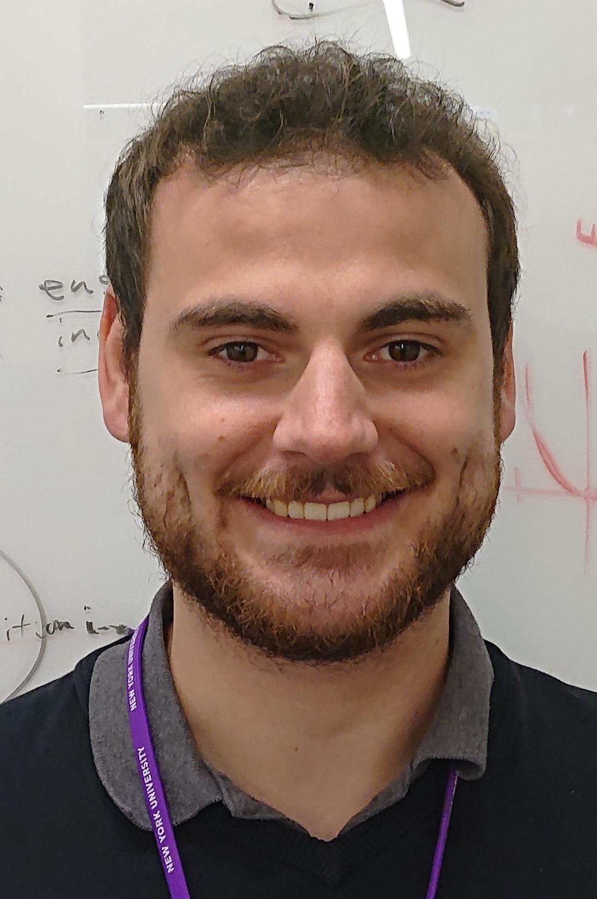

I am a PostDoc with Weiji Ma at NYU and Niko Kriegeskorte at the Zuckerman Institute at Columbia. My research focusses on Models and Methods for vision research. For his PhD I worked with Felix Wichmann in Tübingen and Ralf Engbert in Potsdam on early visual processing and eye movements respectively. Now I work on models for perceptual organization and on methods for high dimensional representational models of higher visual processing like deep neural networks models.